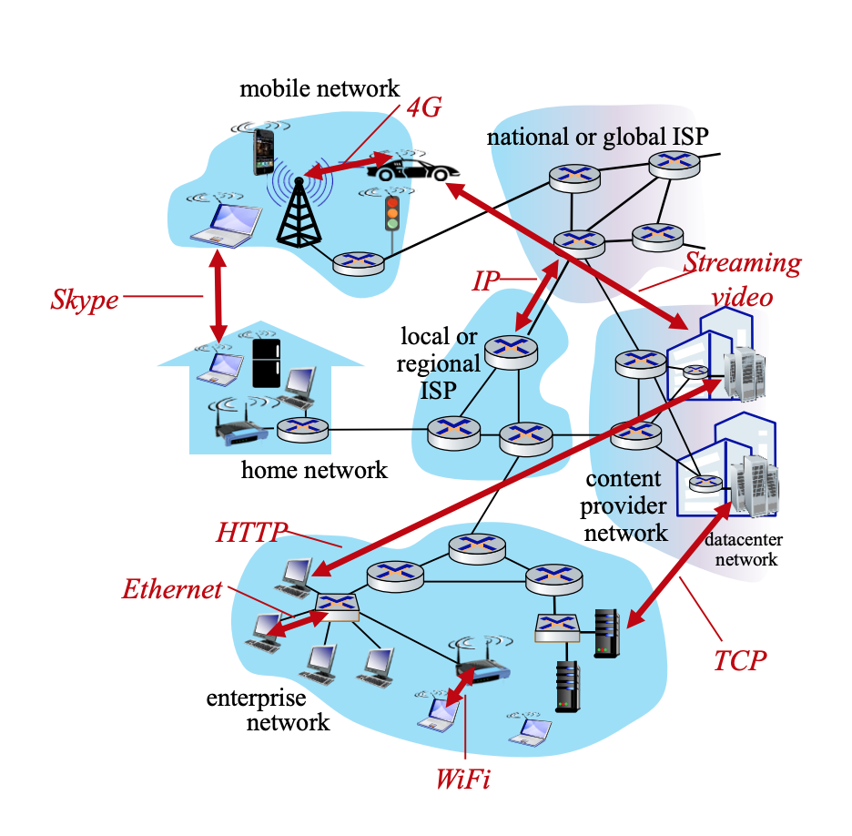
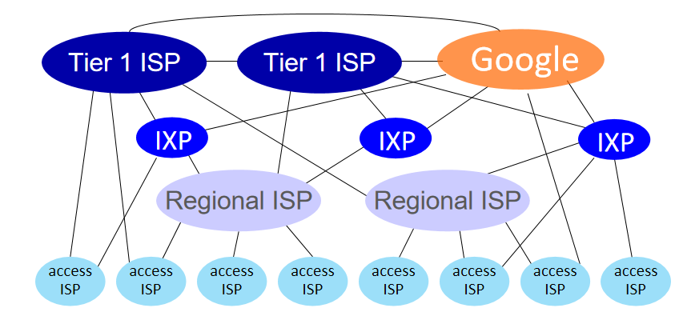
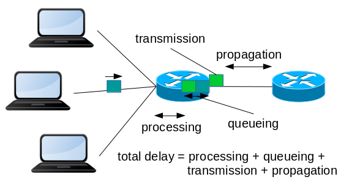
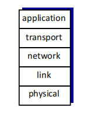

ID: 1221902
ID: 1221996
ID: 1222028
A computer network is a collection of computing devices that are connected together to communicate and share resources. This overview covers key concepts from Chapter 1 of our textbook, "Computer Networking: A Top-Down Approach" by Kurose and Ross.
The Internet is a global network of networks that connects billions of devices worldwide. It can be viewed from two complementary perspectives:
"Nuts and Bolts" View: The Internet consists of:
"Service" View: The Internet provides:

Figure 1: Basic Structure of the Internet
A protocol defines the format and order of messages exchanged between two or more communicating entities, as well as the actions taken on the transmission and receipt of a message. Protocols are to computer networks what language is to human communication.
Just as humans use specific protocols for communication (like greetings, asking questions, and saying goodbye), computers use network protocols to establish connections, transfer data, and terminate connections.
Examples of Internet protocols include:
The network edge refers to the devices and connections at the "edge" of the network, including:
These are the devices that run applications and connect to the Internet:
These are the networks that connect end systems to the first router (edge router) on a path to any other distant end system:
| Access Type | Description | Typical Speeds |
|---|---|---|
| Digital Subscriber Line (DSL) | Uses existing telephone lines | 24-52 Mbps downstream, 3.5-16 Mbps upstream |
| Cable | Uses cable TV infrastructure (HFC) | 40 Mbps - 1.2 Gbps downstream, 30-100 Mbps upstream |
| Fiber to the Home (FTTH) | Direct fiber optic connection | Up to 10+ Gbps (symmetrical) |
| Wireless (WiFi) | Wireless local area network | Up to 450+ Mbps (802.11n/ac/ax) |
| Cellular (4G/5G) | Mobile cellular network | 10-100+ Mbps (4G), 100 Mbps - 10 Gbps (5G) |
Physical media are the physical materials that carry the signals in a computer network:
Guided Media:
Unguided Media (Wireless):
The network core is the mesh of packet switches and links that interconnects the Internet's end systems.
In packet switching, data is divided into small packets that are sent independently through the network:
Key characteristics of packet switching:
In circuit switching, resources are reserved for the duration of a communication session:
Circuit switching can be implemented using:
Packet switching is generally more efficient for data communication because it allows better sharing of network resources, especially for bursty traffic. Circuit switching provides guaranteed performance but can waste resources during idle periods.
The Internet is not a single network but a network of networks. Its structure includes:

Figure 2: Hierarchical Structure of the Internet
Network performance is measured using several key metrics:
Total delay in a network has four components:
Total nodal delay = Processing delay + Queuing delay + Transmission delay + Propagation delay
Packet loss occurs when a packet arrives at a full buffer in a router and is dropped. This can happen during periods of network congestion. Lost packets may need to be retransmitted, affecting overall performance.
Throughput is the rate at which bits are transferred between sender and receiver:
The end-to-end throughput is often limited by the bottleneck link, which is the link with the minimum transmission rate along the path.

Figure 3: Network Performance Metrics
Networks are complex systems with many components. To manage this complexity, network functionality is organized into layers:
Internet Protocol Stack:
Benefits of Layering:

Figure 4: The TCP/IP Protocol Stack
Network security is a critical aspect of modern networks. Some key security concerns include:
Security measures include encryption, authentication, firewalls, and intrusion detection systems.
The Internet was not originally designed with security in mind. Security features have been added over time, but security remains an ongoing challenge in network design and operation.